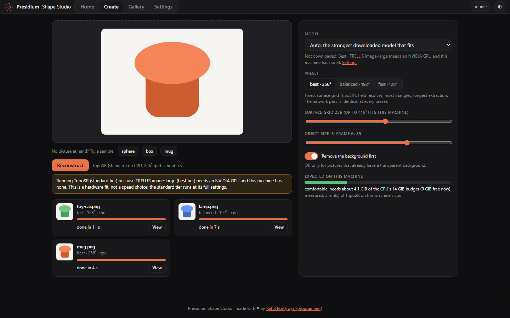
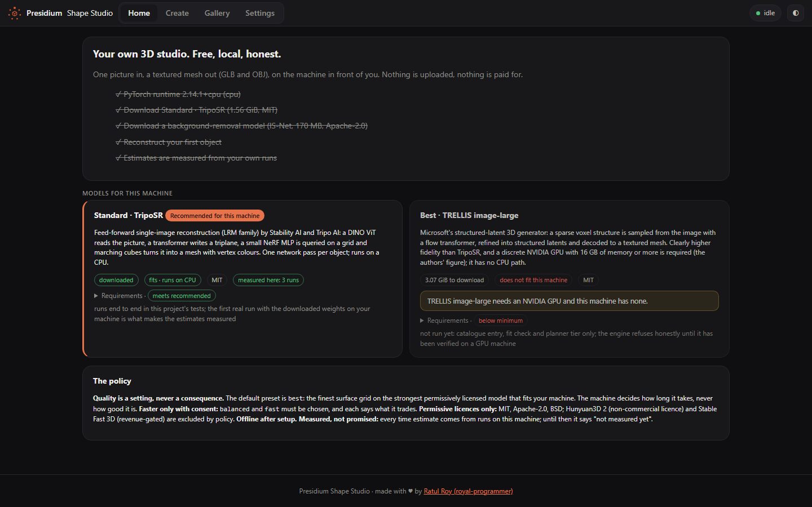
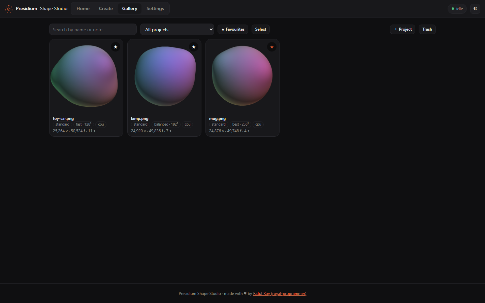
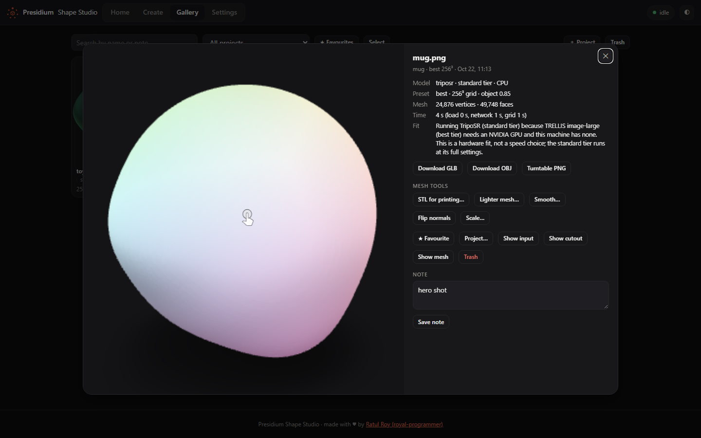
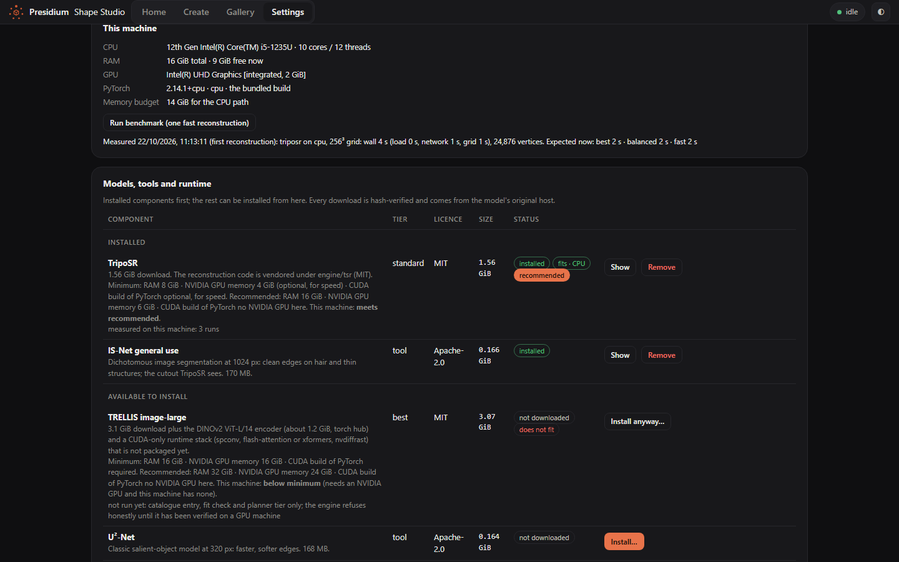

Your own 3D studio.
Free, local, honest.
One picture in, a textured mesh out: GLB and OBJ with vertex colours and a turntable preview, with permissively licensed models, on the machine in front of you. Nothing is uploaded. Nothing is paid for.

Part of the Presidium family. The meshes in these screenshots are demonstration objects from the studio's own mesh pipeline, not TripoSR reconstructions, which this project has not run yet.
Quality is a setting, never a consequence
Most local tools quietly give you less when your machine is small. This one does not. The rules are written down and the software follows them.
The default is the best your machine can do
Preset best is the finest surface grid on the strongest model that fits. The machine decides how long it takes, not how good it looks. Before you commit, the studio tells you the expected time, and whether that number was measured on your hardware.
Faster only with your consent
balanced and fast exist, and each states its trade-off in words: a coarser grid, fewer triangles, the same network pass. Nothing is downgraded silently, ever. A tier that needs a GPU you do not have is refused with the reason, not swapped.
Permissive licences only
TripoSR (MIT), TRELLIS (MIT), PyTorch (BSD), IS-Net (Apache-2.0). Hunyuan3D 2 (non-commercial, with territorial restrictions) and Stable Fast 3D (revenue-gated) are excluded by policy and listed as such.
Measured, not promised
Every time estimate comes from runs on your machine, per model and device, and says not measured yet until the first one. This site makes no timing claim the project has not measured.
Two tiers, chosen by hardware
The planner picks the strongest tier that is downloaded and fits your machine, and says why when that is not the top one.
| Tier | Model | Runs on | Download | Licence | State |
|---|---|---|---|---|---|
| standard (default) | TripoSR (Stability AI and Tripo AI): feed-forward single-image reconstruction, triplane NeRF, marching cubes, vertex colours | CPU, or an NVIDIA GPU with 4 GB | 1.56 GiB | MIT | code vendored and tested on random weights; loaded with the real weights on a user's laptop, complete measured run pending. Minimum 8 GiB RAM, recommended 16; NVIDIA 4 GiB optional |
| best | TRELLIS image-large (Microsoft): structured latents, textured mesh decoder | NVIDIA GPU with 16 GB or more; no CPU path | 3.07 GiB plus the DINOv2 encoder | MIT | catalogue, hash pins and fit check only; engine not integrated yet, refuses honestly. Minimum NVIDIA 16 GiB, recommended 24; the studio asks "download anyway?" on machines below that |
Presets change the surface grid only: best 256³, balanced 192³, fast 128³. The background is cut out with IS-Net (Apache-2.0, 170 MB) before the network sees the picture.
Status, stated plainly
Version 0.1.6. What is proven, what a first user found, what still waits for a GPU report.
| Part | State |
|---|---|
| Queue, planner, downloads, UI, CLI, MCP server, GLB/OBJ, turntable | proven by the test suite with a fake engine |
| Vendored TripoSR code | runs end to end on random weights; ViT matches the reference implementation |
| TripoSR with the real weights | loaded on a user's GTX 1660 Ti laptop with 0.1.5; that run failed in the background remover (fixed in 0.1.6). A complete measured run is still to be reported |
| TRELLIS engine | not integrated; the studio says so |
| CUDA build in the Windows app | download and unpack verified by a user; loading it was broken until 0.1.6 (the app never activated it). Settings now says whether it loaded; a GPU run is still to be confirmed |
| Requirements, setup, mesh tools, problem reports | 0.1.6: minimum and recommended requirements per model checked against your machine, a one-button first-run setup with sample pictures, STL export and mesh clean-up, "Report a problem" |
| Desktop window (Windows, macOS, Linux apps) | starts since 0.1.5; every earlier app build crashed at launch (the CLI and web UI were unaffected) |




Demonstration objects, captured from the running app; real TripoSR output follows the first GPU run.
Install
A Windows, macOS or Linux app, or Python 3.11 or newer on any OS. The models are downloaded by the studio itself, with your consent, hash-verified.
Windows app
ShapeStudio-0.1.6-Setup.exe → Next, Next, done
Use 0.1.6 or newer. 0.1.0 to 0.1.4 crash at start; 0.1.5 starts but every reconstruction with background removal fails and the CUDA build never loads. 0.1.6 fixes both. A Microsoft Store listing is in certification; until it carries 0.1.6, install from the release below.
From the latest release. Start menu, uninstall from Settings, no administrator rights. A portable zip is there too. Not code-signed yet: SmartScreen asks once per download ("More info" → "Run anyway"). The SHA-256 is next to the download. PyTorch's CPU build (124 MB) is inside; the CUDA build (1.9 GiB) is offered on NVIDIA machines.
macOS and Linux
ShapeStudio-0.1.6-macos-arm64.zip ShapeStudio-0.1.6-linux-x86_64.tar.gz
Apple silicon: unzip, right-click "Shape Studio.app" → Open the first time (not notarized yet). Linux x86_64: unpack, run ShapeStudio; it opens in your browser. The SHA-256 is next to each download.
With pipx or pip
pipx install presidium-shapestudio shapestudio ui
PyTorch comes along as a dependency: 124 MB on Windows, 127 MB on macOS; on Linux the PyPI default is the CUDA build (about 3 GB with its libraries), so add --pip-args "--extra-index-url https://download.pytorch.org/whl/cpu" for the CPU build.
First run
shapestudio doctor shapestudio download-model triposr --yes shapestudio download-model isnet-general-use --yes shapestudio reconstruct chair.png --out meshes/
Or let the app do it: Home shows a setup card for your machine with one "Download and set up" button, then "Try the sample box". Your first reconstruction measures your machine; shapestudio benchmark does the same from the command line.
As an MCP server
{ "mcpServers": { "shapestudio":
{ "command": "shapestudio", "args": ["serve"] } } }Tools: capabilities, plan, reconstruct, job_status, job_result, jobs, cancel_job, download_model. Client configs and a typical agent flow: For agents.
Official builds are the GitHub Releases of the repository and the presidium-shapestudio package on PyPI.
Licences and the name
The code is free. The name is not. Both are deliberate.
Code: Apache-2.0
Use it, fork it, ship it, in products and at work. Keep the NOTICE file and the author lines, as the licence asks. The vendored TripoSR code is MIT; its attention blocks derive from Hugging Face diffusers (Apache-2.0).
Models and runtime
TripoSR and TRELLIS weights are MIT. PyTorch is BSD-3-Clause (the CUDA libraries inside its CUDA build are under NVIDIA's EULA). scikit-image is BSD; ONNX Runtime MIT; IS-Net and U²-Net Apache-2.0; model-viewer Apache-2.0.
Name: a trademark
"Presidium" and "Presidium Shape Studio" and the mark identify the official project. Forks are welcome under their own name and may say "based on Presidium Shape Studio". The policy is in TRADEMARK.md.